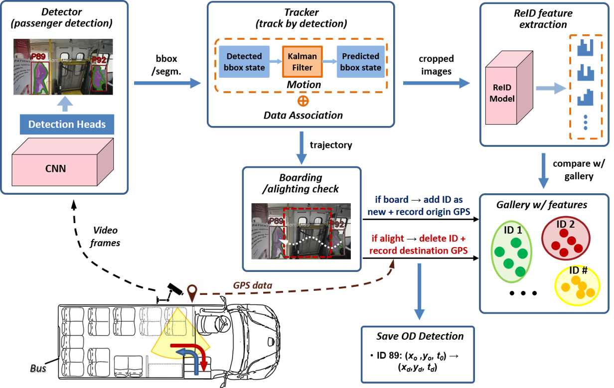

Smart Mobility Sensing of Passenger Origin-Destination Tracking

Understanding passenger movement within public transportation systems is essential for efficient transit planning, especially in resource-limited communities. Traditional methods for measuring origin-destination (OD) flows, like manual driver logs, are labor-intensive and often inaccurate. This study proposes an automated, computer vision-based system for accurately detecting and tracking OD pairs. Combining advanced vision-based modules—such as passenger detection, tracking, and re-identification—with GPS data, this system offers a robust, privacy-preserving solution tailored to the unique needs of resource-constrained areas. It highlights how affordable, scalable technologies can address limitations and meet the growing demand for efficient transit solutions. The study aims to enhance transportation services in under-resourced communities where advanced sensors or smart card systems are not feasible. Using deep learning models and edge computing, the system achieves high accuracy in tracking passenger movements under real-world conditions, overcoming challenges like occlusion and pose variation. The approach adapts existing algorithms for localized conditions and deploys them effectively in resource-constrained transit systems. Results show that the system not only enhances OD data precision but also provides actionable insights to optimize routes and improve bus system efficiency.